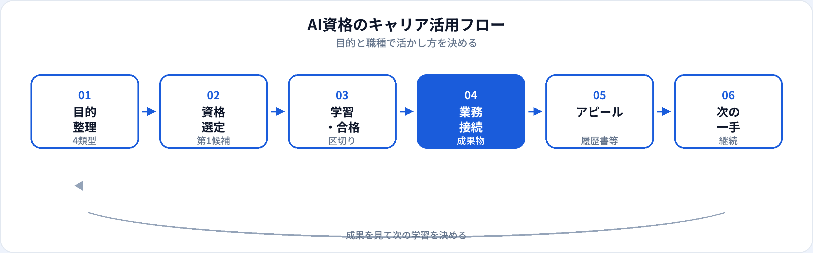

「AI資格を取れば転職できる」「資格があれば社内で評価される」——半分正しく、半分は誤解です。AI資格は学習の区切りとリテラシーの客観的証明として有用ですが、それ単体がキャリアの決定打になることは稀です。本記事では、AI資格がどんな場面で効き、どこまで効かないかを目的別・職種別に整理し、履歴書・面接・社内での具体的な活かし方を2026年6月時点の市場感覚で解説します。職種別の第1候補一覧は職種別おすすめAI資格一覧、資格の選び方は初心者向け3資格比較、非エンジニア向けも参照してください。
AI資格がキャリアにもたらす3つの価値
資格の価値は「合格証」そのものより、合格までのプロセスと、その後の接続にあります。
1. 学習の区切りと共通言語
AI・生成AI・データの用語を体系的に整理できる。社内のAI議論や面接で「何を理解しているか」を説明しやすくなる。
2. 第三者によるリテラシーの証明
履歴書・社内人事・クライアント向け提案で、「独学でなんとなく」ではなく客観的基準をクリアしたと示せる。
3. 次の行動のトリガー
合格を機に業務試行・ポートフォリオ・転職活動を始めるきっかけになる。資格で終わらせない設計が重要。
資格別の詳しい活かし方
資格で証明できること・できないこと
期待値をずらすと、資格取得後のギャップで挫折しやすくなります。主要資格を横断で整理します。
| 証明しやすいこと | 別途必要になりやすいこと |
|---|---|
| 基礎用語・概念の理解（G検定、生成AIパスポート） | Python/SQL等の実装力（エンジニア・DS職） |
| 生成AIのリスク・倫理の判断力（生成AIパスポート） | 社内データ・機密情報を扱う実務経験 |
| 学習意欲・継続力（全資格共通） | 転職・昇進で問われる定量成果（売上、工数削減等） |
| IT全般の入門リテラシー（ITパスポート） | ドメイン知識（金融、製造、医療等の業界固有スキル） |
生成AIパスポートはコーディング試験ではない、G検定も実装試験ではない——この点を理解したうえで、職種に応じた「足りない部分」を補うのがキャリア設計の基本です。
目的別：4つの活かし方
同じ資格でも、目的によって活かし方が変わります。自分の目的に近い列を確認してください。
| 目的 | 資格の主な役割 | おすすめ資格の目安 | 合格後にやること |
|---|---|---|---|
| 現職の業務改善 | 安全な生成AI活用の土台 | 生成AIパスポート | 自分の業務で1つテンプレ化し、工数・品質を記録 |
| 社内AI推進・研修 | 推進リーダーのリテラシー証明 | 生成AIパスポート → G検定 | 社内勉強会・ガイドライン草案・成功事例の共有 |
| 転職・キャリアチェンジ | 書類選考・面接の入口 | 職種に応じてG検定 or 生成AIパスポート | 職種別ポートフォリオ・職務要約との接続 |
| リスキリング・副業 | 新分野への学習完了の証明 | 生成AIパスポート or G検定 | 副業案件・社内異動の具体案を用意（副業の準備） |
目的が複数ある場合は、いま最優先の1つに合わせて第1資格を選び、2つ目以降は合格後に判断するのが効率的です。
職種別：資格の効き方
職種によって、資格がどの選考・評価局面で効きやすいかが異なります。
| 職種・方向性 | 資格の効き方 | 特に有効な資格 | 詳細ガイド |
|---|---|---|---|
| 営業・企画・事務・人事（非エンジニア） | 業務改善・社内推進で評価されやすい | 生成AIパスポート | 非エンジニア向け資格 |
| データアナリスト | データ・AI基礎の理解として書類・面接で評価 | G検定、生成AIパスポート | データアナリストとは |
| AIエンジニア・MLエンジニア | 入口として有効だが実装ポートフォリオ必須 | G検定 | AIエンジニアとは |
| プロンプトエンジニア・生成AI活用 | 業務組み込み・評価設計の理解として | 生成AIパスポート | プロンプトエンジニアとは |
| AIプロダクトマネージャー | エンジニアとの共通言語・要件整理 | G検定 + 生成AIパスポート | AI PMとは |
| 管理職・経営層 | 導入判断・リスク管理の説明材料 | 生成AIパスポート | 管理職向けAI資格 · 学習ガイド |
| 文系からのキャリアチェンジ | 学習意欲の証明＋職種選定の材料 | 生成AIパスポート → G検定 | 文系からAI職へ |
キャリア活用のフロー

履歴書・面接・社内での活かし方
履歴書・職務経歴書
「資格・免許」欄に正式名称と取得年月を記載。職務要約では資格と行動を一文で結ぶ（例：「生成AIパスポート取得に伴い、月次報告の下書き時間を35%削減」）。記載例はAI資格を履歴書に書く方法を参照。
面接
面接官が知りたいのは次の3点です。
- なぜその資格を選んだか 目的と職種への関連を具体的に
- 合格後に何をしたか 業務・ポートフォリオ・社内活動のいずれか
- 限界を理解しているか ハルシネーション、バイアス、データ品質など
G検定志望者向けの面接ポイントはG検定記事の面接セクションも参照。
社内評価・昇進
人事・上長は「資格を取った」より「業務にどう効いたか」を見ます。社内勉強会の開催、ガイドライン策定への参加、工数削減の数値化など、見える成果とセットで報告すると評価に結びつきやすいです。G検定合格者の社内動き方は社内で評価される動き方も参照。
年収・評価への影響（現実的な見方）
「資格を取れば年収が上がる」と一概には言えません。G検定合格直後に大幅な年収アップが保証されるわけではなく、転職先の職種・スキルセット・交渉に依存します。市場の実態はG検定合格後に年収は上がるか、AIエンジニア全体の相場は年収の推移を参照。
| シナリオ | 資格の影響度（目安） | 備考 |
|---|---|---|
| 同社・同職種での昇給 | 低〜中 | 業務成果が主。資格はリスキリングの証明として |
| AIリテラシー職への転職 | 中 | 書類・面接の入口。決定打はポートフォリオ |
| 未経験からAIエンジニア | 中（必要条件ではない） | G検定＋実装成果がセットで評価されやすい |
| フリーランス・副業 | 低〜中 | 実績・単価交渉が主。資格は信頼の補助材料 |
資格は年収交渉の唯一の根拠にはなりにくい一方、AI関連職への挑戦のコミットメントを示す材料にはなります。
資格だけでは足りない点
キャリアに効かせるには、資格を手段に留め、次のいずれかとセットにします。
よくある質問
AI資格は転職にどれくらい効く？
AIリテラシー職では書類・面接の入口として有効なことがあります。決定打は実務・ポートフォリオ・業務成果です。
資格だけでは不採用になる？
実装・分析が中心の職種では資格のみでは不採用になりやすいです。非エンジニア職でも活用実績があると評価されやすくなります。
社内評価では資格はどう見られる？
研修成果として評価される一方、昇進の主役は業務成果です。合格後に社内で改善事例を出すと結びつきやすいです。
目的によって効く資格は違う？
異なります。業務活用なら生成AIパスポート、AI/データ職ならG検定、IT基礎ならITパスポートが一般的です。3資格比較を参照。